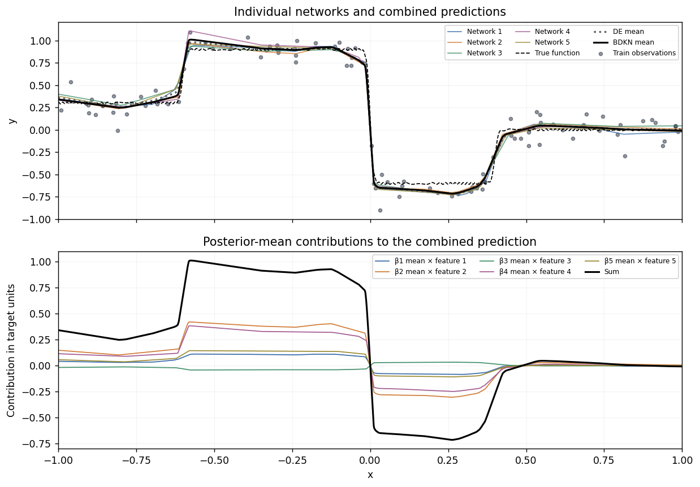
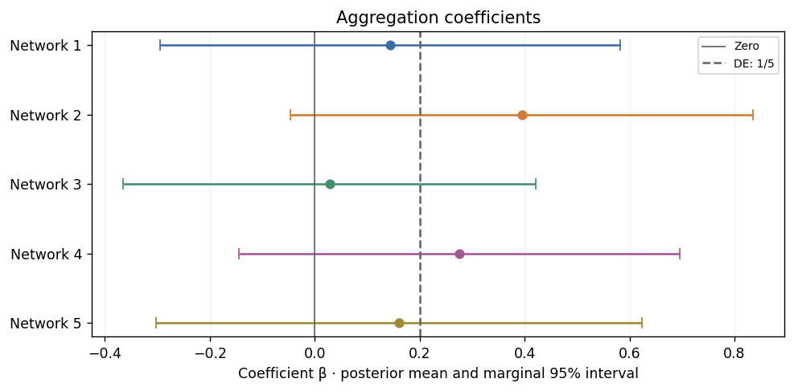
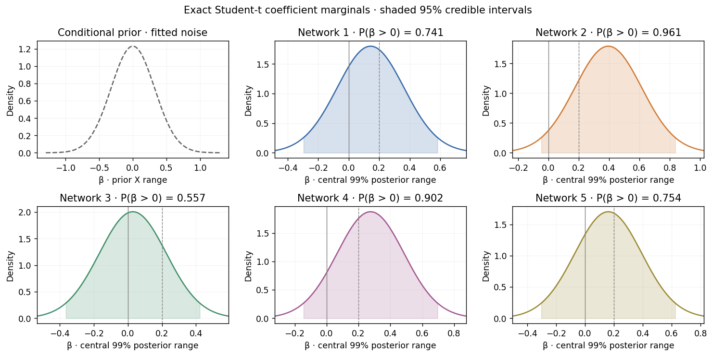
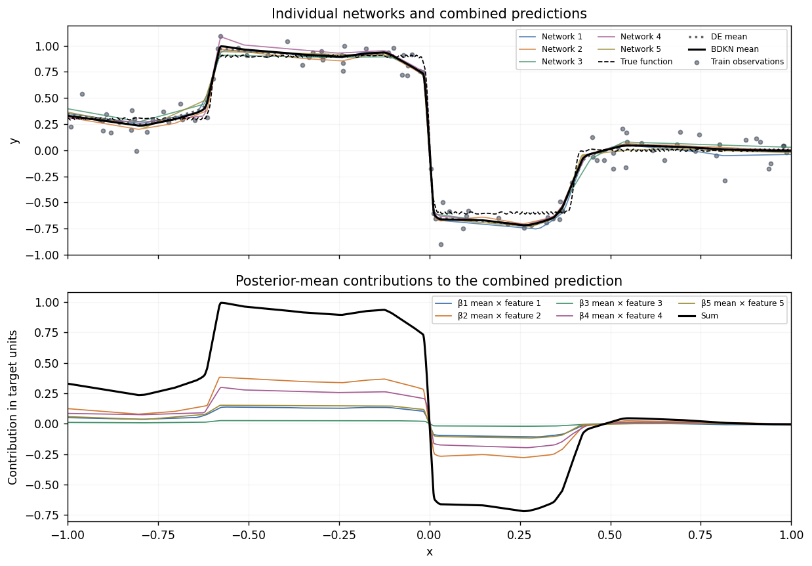
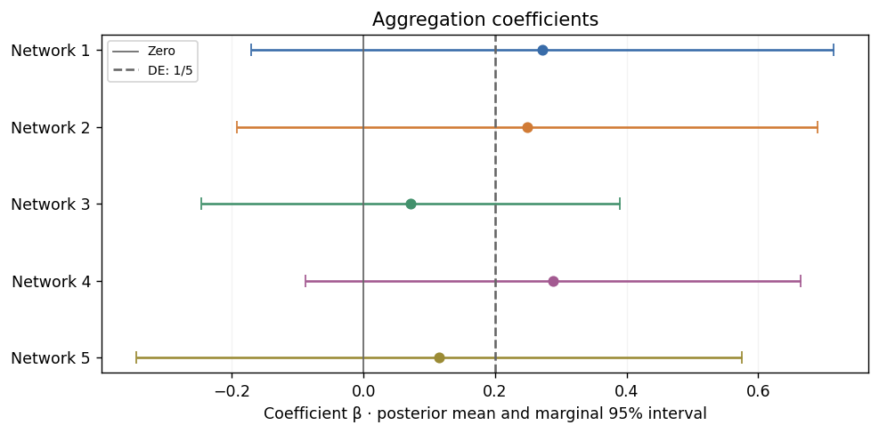
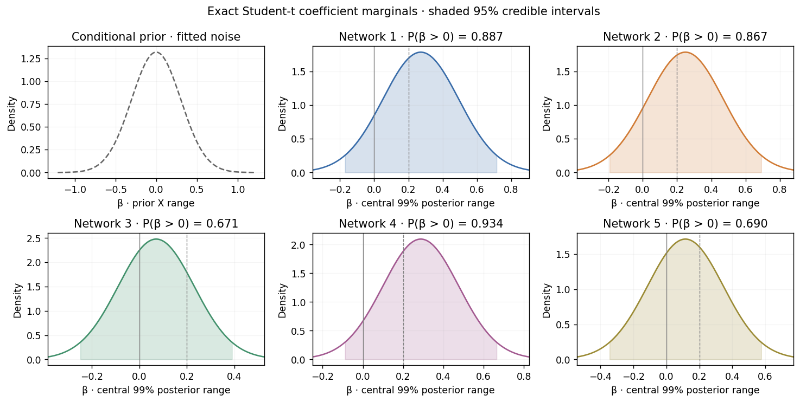
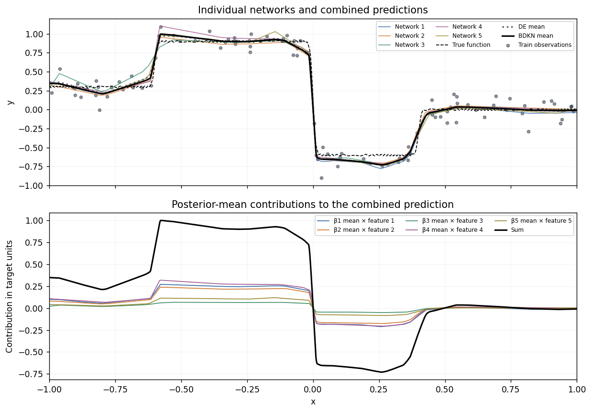
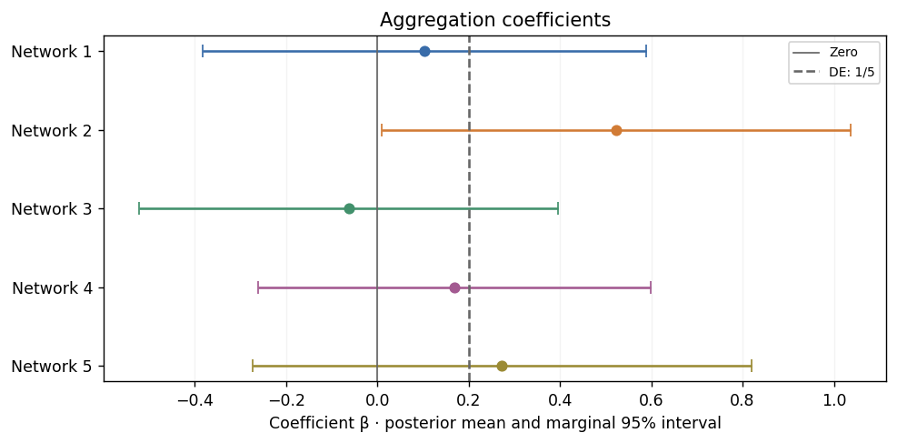
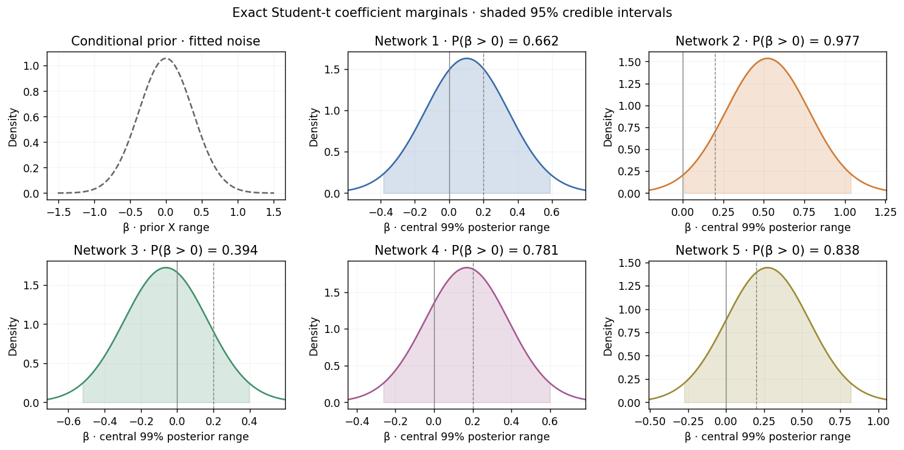
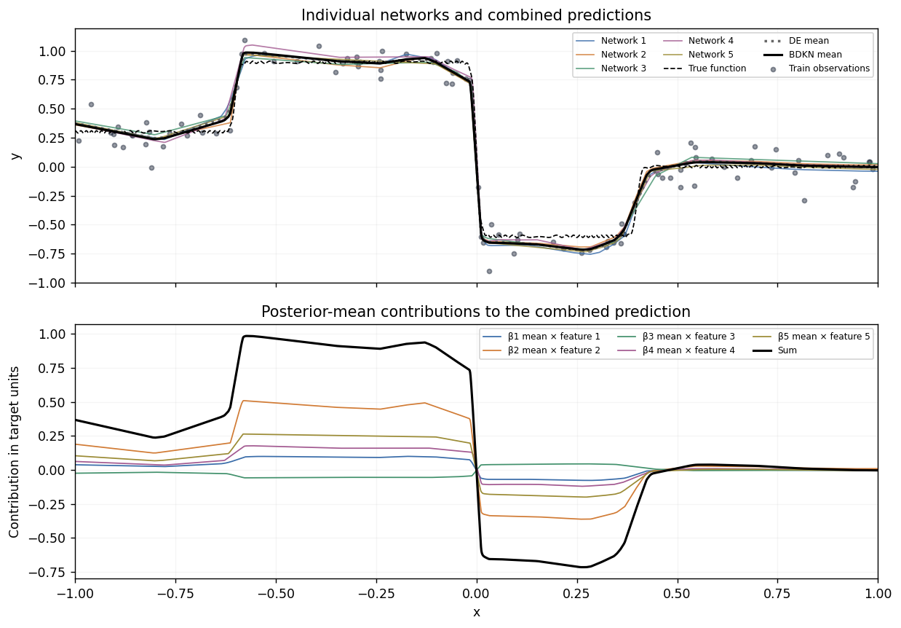

Regression comparison
Download resultsAggregation weights
Coefficients can be negative and need not sum to one. Intervals describe coefficient uncertainty; the dashed reference is DE’s fixed 1/H weight.
BDKN



Each density panel uses its own X range for readability; coefficient intervals above share a common axis. Prior reference conditions on fitted noise. Contribution shares use held-out inputs; test targets are used only for scoring.
| Network | β mean | 95% low | 95% high | P(β > 0) | Contribution share | Test RMSE | Test NLL |
|---|---|---|---|---|---|---|---|
| 1 | 0.11707 | -0.36801 | 0.60216 | 0.68344 | 0.10770 | 0.11461 | -0.64127 |
| 2 | 0.43255 | -0.08743 | 0.95254 | 0.94900 | 0.38807 | 0.11114 | -0.56796 |
| 3 | -0.04553 | -0.49600 | 0.40493 | 0.42073 | 0.04237 | 0.11567 | -0.35127 |
| 4 | 0.34541 | -0.08476 | 0.77558 | 0.94285 | 0.32373 | 0.12007 | -0.17405 |
| 5 | 0.14943 | -0.38309 | 0.68194 | 0.71052 | 0.13813 | 0.11541 | -0.42316 |
Functional repulsion · BDKN



Each density panel uses its own X range for readability; coefficient intervals above share a common axis. Prior reference conditions on fitted noise. Contribution shares use held-out inputs; test targets are used only for scoring.
| Network | β mean | 95% low | 95% high | P(β > 0) | Contribution share | Test RMSE | Test NLL |
|---|---|---|---|---|---|---|---|
| 1 | 0.14361 | -0.29488 | 0.58211 | 0.74134 | 0.14634 | 0.11790 | -0.58569 |
| 2 | 0.39480 | -0.04611 | 0.83571 | 0.96065 | 0.38240 | 0.11148 | -0.51419 |
| 3 | 0.02859 | -0.36459 | 0.42178 | 0.55721 | 0.02916 | 0.11661 | -0.31507 |
| 4 | 0.27606 | -0.14397 | 0.69609 | 0.90238 | 0.28139 | 0.11556 | -0.39708 |
| 5 | 0.16105 | -0.30219 | 0.62430 | 0.75403 | 0.16070 | 0.11374 | -0.39495 |
Weight repulsion · BDKN



Each density panel uses its own X range for readability; coefficient intervals above share a common axis. Prior reference conditions on fitted noise. Contribution shares use held-out inputs; test targets are used only for scoring.
| Network | β mean | 95% low | 95% high | P(β > 0) | Contribution share | Test RMSE | Test NLL |
|---|---|---|---|---|---|---|---|
| 1 | 0.27225 | -0.17054 | 0.71505 | 0.88730 | 0.27622 | 0.11801 | -0.23984 |
| 2 | 0.24932 | -0.19219 | 0.69084 | 0.86738 | 0.23991 | 0.11232 | -0.58168 |
| 3 | 0.07119 | -0.24718 | 0.38956 | 0.67087 | 0.07152 | 0.11883 | -0.40744 |
| 4 | 0.28788 | -0.08874 | 0.66449 | 0.93373 | 0.29529 | 0.12000 | -0.29917 |
| 5 | 0.11541 | -0.34486 | 0.57568 | 0.69003 | 0.11706 | 0.11633 | -0.28029 |
First-order repulsion · BDKN



Each density panel uses its own X range for readability; coefficient intervals above share a common axis. Prior reference conditions on fitted noise. Contribution shares use held-out inputs; test targets are used only for scoring.
| Network | β mean | 95% low | 95% high | P(β > 0) | Contribution share | Test RMSE | Test NLL |
|---|---|---|---|---|---|---|---|
| 1 | 0.10278 | -0.38241 | 0.58796 | 0.66240 | 0.09274 | 0.11767 | -0.53639 |
| 2 | 0.52314 | 0.00911 | 1.03716 | 0.97693 | 0.45486 | 0.11083 | -0.59399 |
| 3 | -0.06219 | -0.52106 | 0.39668 | 0.39429 | 0.05638 | 0.11653 | -0.41310 |
| 4 | 0.16882 | -0.26168 | 0.59931 | 0.78080 | 0.15339 | 0.11765 | -0.37760 |
| 5 | 0.27299 | -0.27342 | 0.81941 | 0.83801 | 0.24262 | 0.11484 | -0.34374 |